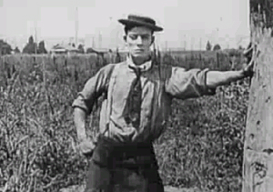
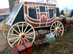

The Founding of Overland Park Kansas
The Legend
In 1802, hunter and trapper James Pursley followed a well-traveled trail to New Mexico to do some trading, following a route that travelers started to call the Santa Fe Trail. As trade heated up between merchants in Missouri and trappers in New Mexico, the trail evolved into the Santa Fe Road. Increased traffic and commerce in the area resulted in friction with native tribes still attempting to live on the land's resources.John Overland Park, Blacksmith As a solution, the U.S. government negotiated a treaty in 1825 with the Shawnee Indians in Missouri; in exchange for surrendered land in Missouri, the tribe received an equivalent amount of land on a reservation in what is now Johnson County, Kansas.
A new era began for the formerly nomadic tribe that had up until then lived in eastern woodlands; the move to the plains necessitated much adaptation as the Shawnees became farmers. In 1829 the Rev. Thomas Johnson (for whom the county is named) moved to the reservation, where an Indian Manual Labor School was created. Native American children were tutored in English, manual arts, agriculture, and Christianity.
John Overland Park was born in the spring of 1834 in Braintree, Massachusetts. His childhood and youth were passed in poverty, and his health was impaired early by hard, manual labor. His only means for gratifying his eager desire for books was the small library founded in his native town by Benjamin Franklin and consisting principally of histories and treatises on theology.
He enrolled in Harvard University at the age of 20 and graduated after three years as valedictorian of his class in 1857. He then studied law for a short time at Wrentham, Massachusetts; was a tutor of Latin and Greek (1858-181861) and a librarian (1861-1863) at Brown University; studied during 1861-1863 at Litchfield Law School (the famous law school conducted by Judge James Gould in Litchfield, Connecticut); and in 1863, was admitted to the Norfolk, Massachusetts, bar.
His life long dream was to travel west to the new Kansas territory. John graduated from Harvard in the spring of 1865. He followed the advice of Horace Mann, an American education reformer and abolitionist, and "went west". He moved to the new Kansas territory and founded a blacksmith shop on what is now 80th and Metcalfe. In fact the statue of the overland stage coach at that location was built by Overland Park to indicate the location of his blacksmith shop to the travelers continuing their westward journey.